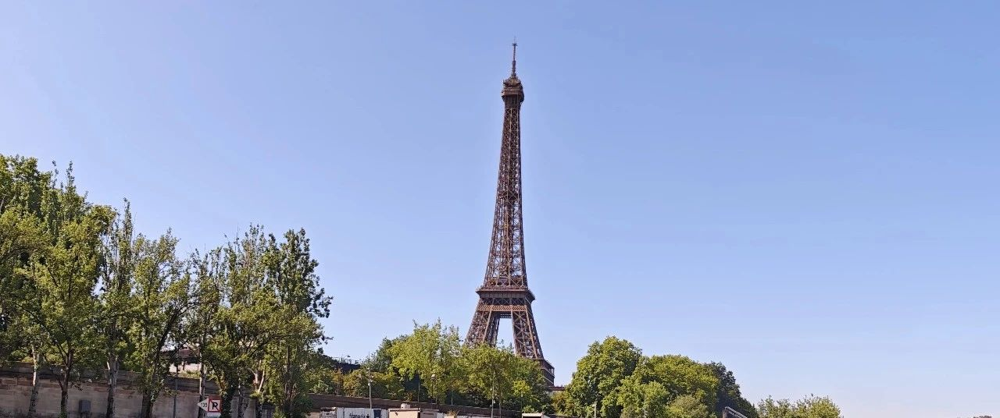

时光里的灰烬~
出门旅行的这段时间，基本上没怎么打开过账户，今天瞧了一眼，这段时间一些设置被触发:
联合健康280.87加仓了些，目前成本307;
谷歌186减仓节点被触发，做T部分顺利卖出，还有个192未触发，触发后，做T部分将清仓，7成底仓不变。
其他没动。
台积电、英伟达、AMD、博通这段时间受利好信息刺激，上涨得不错，偶有回调;
微软这阵子很硬，已经站上510美元;特斯拉很妖，Meta高位震荡，谷歌依旧慢吞吞，亚马逊接近修复历史最高位，苹果依旧相对低迷…
我小儿子依旧会经常想看看账户，看自己赚了多少钱。我已经连账户都不想看了，没必要，选好个股买进来后操作好放着，要涨要跌，随它们去。
心性上这几年变化挺大，这几天和媳妇带着娃们旅行，也聊到了我们俩在2010-2020年十年间走的一些路，孩子们很感兴趣。
如梦十年已经过去，风云激荡夹着波诡云谲，高楼宴饮接着烛影斧声，世事无常，命数更无常。
如今早已不再逐潮，而倾向于理解潮的势能与动能，旁观者一般去观察和了解，成为潮本身的一份子。
楼市依旧下行，新一轮的下跌又再度开始。我很幸运地在高峰期和下行初期清掉手头的房子，躲过这轮周期性的下跌，因此能置身事外，更理性客观地去看待它。
大饼一度突破12万美元，最近略有回调，11.7万美元。大饼我今年看不太懂，所以较少做多或做空，一直以跑量化为主，目前收益率50%+，还不错。
跑量化的模型在之前的基础上重新优化和编写，今年应该可以彻底完善，接下去几年会进入大的收获期。优秀的模型跑量化，应该会有100-400%的收益率。
稳定币的概念最近很热，但整体来说，90%+还是要首选美元稳定币，也就是USDT、USDC这类。
其中USDC对应的个股，就是CRCL，目前市场占有率约24%，而龙头是USDT，市场占有率约50%，目前还没有在美股上市。
老美推稳定币，主要目的还是为了维持美元地位、争夺加密货币世界的领导权，至于美债这种，并不是那么重要。
稳定币对应的美债，以短期美债为主，这类一直都不愁卖，美债需要扩张销售量的主要是3-30年的中长期美债。
稳定币最重要的三大功能，一个是隐蔽性/私密性、便捷性、稳定性。不具备这三点的功能，都是炒概念的垃圾。
便捷性，就涉及到资产的转移，从A国到B国，点点手指就可以实现，绕开管制;
稳定性，和美元（或本币）是1:1的概念，不容易受本货币贬值的影响;
私密性，你买了没人知道在现实中由谁持有，具有去中心化的特征。
不具备这三点的稳定币，我个人认为都是伪稳定币。
… …
这段时间带娃们在欧洲走走，集中在五个国家:
在英国看教育，主要参观几所中小学贵族学校，并体验他们的日常生活，类似于游学;
在德国，参观他们的大企业参观，近距离了解主要产业和工匠精神、民族特征;
在法国和意大利，主要参观他们的建筑和人文精神（宗教），给他们讲解这两个国家的文艺复兴、宗教运动…
以及瑞士的湖光山色自然景观。
三天前到法国，第一天走了走凯旋门、埃菲尔铁塔和塞纳河畔;第二天安排卢浮宫，逛了一整天，带他们了解该建筑的发展史和收藏品;昨天在老佛爷和香榭丽舍大街一带逛逛走走;
今天安排了凡尔赛宫;明天主要去梅兹看看梅斯大教堂;后天去埃吉桑等两个小镇走走，然后去瑞士度假，最后再去意大利。
最近天气在15-25℃，很凉快，有风，偶尔会稍热一些，但都没觉得热。
小儿子第一次到法国来，我发现他对历史很有兴趣，如卢浮宫和凡尔赛宫的发展史，以及收藏品的历史，我就很详细给他们科普了经典收藏品的由来。
法国和德国有很大的不同，法国的假期很多，人们也普遍比较松弛:
谈恋爱、度假、游行、体验生活。
法国认为之前入侵非洲，给被殖民国家带来过苦难，因此放开了对被殖民国家的移民，以及收纳了很多中东的难民，现在的法国黑人和中东人很多;
加上欧盟国家内，各个国家的人自由流动，意大利的吉普赛人大量涌入巴黎，因此现在巴黎等大城市的小偷多。
不过我们暂时还没有遇到。
小儿子很好奇，什么叫游行？我告诉他，这是人们在聚众争取自己的合法权利。
法国人还挺喜欢游行的，老板告诉你今年能涨3%工资，结果只涨了2.8%，法国人也会去游行。
法国的农业发达，是欧洲第一大农业生产国;食品加工业挺强的，拥有达能、巴黎水、依云等品牌。
航空航天强国，坐拥空客、达索航空等;汽车制造主要有雪铁龙、雷诺;
核能、化工、钢铁与材料也强，我们的大亚湾核电站，技术等就来源于法国。
此外，法国的金融与银行业、旅游、物流、文化与娱乐也做得很不错。
法国的物价比2020年之前上涨了不少，以典型受影响的能源为例，以前油价0.5-0.8欧元，现在1.2欧元，涨幅较大;生活必需品也上涨了些。
收入的话，每个月税前平均约3600+欧元，税后净收入约2700多欧元，社会贫富差距小。
如果以欧元收入和消费来看，物价其实也挺便宜的。如果非要换成人民币来算，那就看起来都高。
社会福利就是典型的高福利国家，出生到死亡，很多都有政府兜底。
就这样，法国人还动不动要去看看心理医生。老二说，如果是这样，她也会思考自己的人生意义在哪，也会迷茫。
三个孩子在看建筑的时候，他们会很讨论几百年前是如何建起这么高大、空间高且广阔的建筑，运用了什么原理。
小儿子说，看到最多的是长方形、三角形等架构，重力支撑点都很好找，都属于稳定的几何结构。
老大老二明显对雕像和建筑上的浮雕、油画更感兴趣，拉着媳妇一路参观，了解过去。
小儿子拉着朋友去四处看，了解法国的历史和建筑历史。
我就轻松多了，这会坐在凡尔赛宫的花园里喷泉旁，码码字，看看景观。
最近我开始很喜欢村落、小镇的生活，远离熙熙攘攘，安静。
平和地对待自己的理想和抱负，人到中年，对生活的激情已褪去，也意识到自己作为普通人所能做的…越想越平静。
如同时光里的灰烬，返璞归真。
就这样吧。
免责声明：本人提供的信息仅供参考，不构成投资建议。本人的交易不代表任何立场；投资者应根据自身财务状况、投资目标等情况自主做出投资决策并承担投资风险。投资有风险，入市需谨慎。